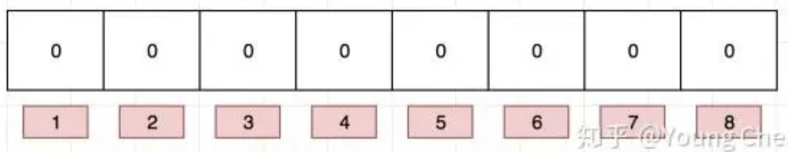
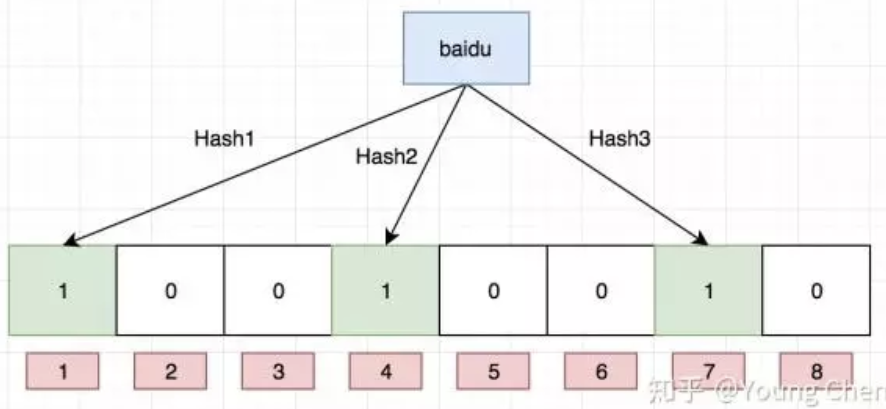
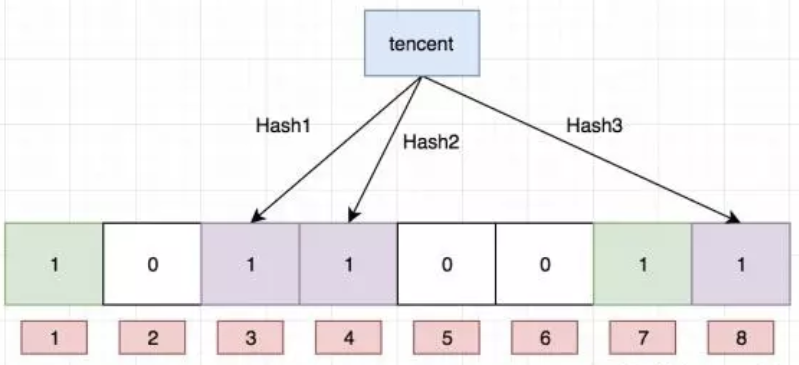
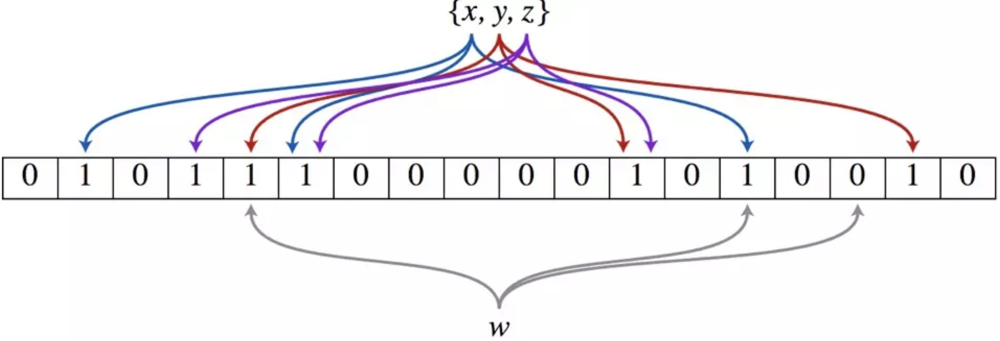
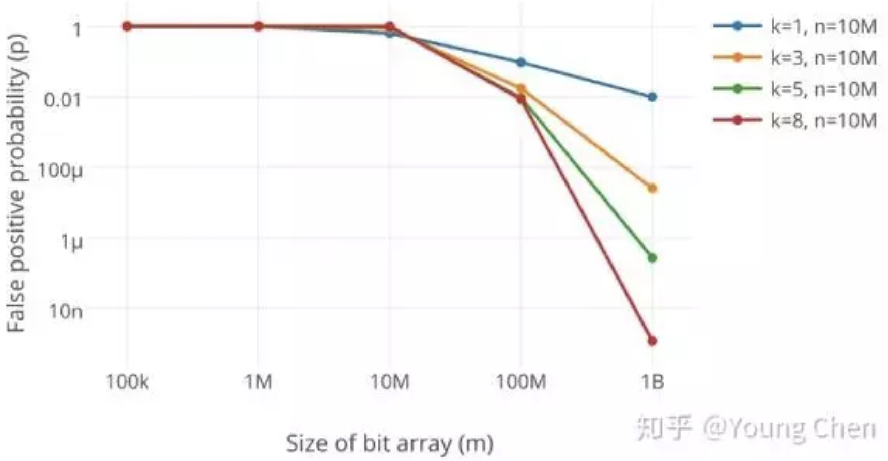
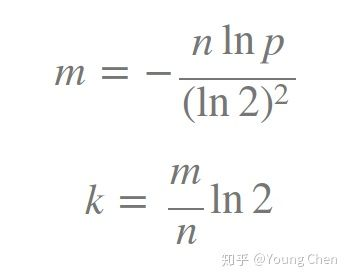

布隆过滤器 (Bloom Filter)是由Burton Howard Bloom于1970年提出，它是一种space efficient的概率型数据结构，用于判断一个元素是否在集合中。在垃圾邮件过滤的黑白名单方法、爬虫(Crawler)的网址判重模块中等等经常被用到。哈希表也能用于判断元素是否在集合中，但是布隆过滤器只需要哈希表的1/8或1/4的空间复杂度就能完成同样的问题。布隆过滤器可以插入元素，但不可以删除已有元素。其中的元素越多，false positive rate(误报率)越大，但是false negative (漏报)是不可能的。
本文将详解布隆过滤器的相关算法和参数设计，在此之前希望大家可以先通过谷歌黑板报的数学之美系列二十一 － 布隆过滤器（Bloom Filter）来得到些基础知识。
什么是布隆过滤器
本质上布隆过滤器是一种数据结构，比较巧妙的概率型数据结构（probabilistic data structure），特点是高效地插入和查询，可以用来告诉你 “某样东西一定不存在或者可能存在”。
相比于传统的 List、Set、Map 等数据结构，它更高效、占用空间更少，但是缺点是其返回的结果是概率性的，而不是确切的。
实现原理
HashMap 的问题
讲述布隆过滤器的原理之前，我们先思考一下，通常你判断某个元素是否存在用的是什么？应该蛮多人回答 HashMap 吧，确实可以将值映射到 HashMap 的 Key，然后可以在 O(1) 的时间复杂度内返回结果，效率奇高。但是 HashMap 的实现也有缺点，例如存储容量占比高，考虑到负载因子的存在，通常空间是不能被用满的，而一旦你的值很多例如上亿的时候，那 HashMap 占据的内存大小就变得很可观了。
还比如说你的数据集存储在远程服务器上，本地服务接受输入，而数据集非常大不可能一次性读进内存构建 HashMap 的时候，也会存在问题。
布隆过滤器数据结构
布隆过滤器是一个 bit 向量或者说 bit 数组，长这样：

如果我们要映射一个值到布隆过滤器中，我们需要使用多个不同的哈希函数生成多个哈希值，并对每个生成的哈希值指向的 bit 位置 1，例如针对值 “baidu” 和三个不同的哈希函数分别生成了哈希值 1、4、7，则上图转变为：

Ok，我们现在再存一个值 “tencent”，如果哈希函数返回 3、4、8 的话，图继续变为：

值得注意的是，4 这个 bit 位由于两个值的哈希函数都返回了这个 bit 位，因此它被覆盖了。现在我们如果想查询 “dianping” 这个值是否存在，哈希函数返回了 1、5、8三个值，结果我们发现 5 这个 bit 位上的值为 0，说明没有任何一个值映射到这个 bit 位上，因此我们可以很确定地说 “dianping” 这个值不存在。而当我们需要查询 “baidu” 这个值是否存在的话，那么哈希函数必然会返回 1、4、7，然后我们检查发现这三个 bit 位上的值均为 1，那么我们可以说 “baidu” 存在了么？答案是不可以，只能是 “baidu” 这个值可能存在。
这是为什么呢？答案跟简单，因为随着增加的值越来越多，被置为 1 的 bit 位也会越来越多，这样某个值 “taobao” 即使没有被存储过，但是万一哈希函数返回的三个 bit 位都被其他值置位了 1 ，那么程序还是会判断 “taobao” 这个值存在。
再上一个原理讲解, 个人觉得这个更清晰
布隆过滤器（Bloom Filter）的核心实现是一个超大的位数组和几个哈希函数。假设位数组的长度为m，哈希函数的个数为k

以上图为例，具体的操作流程：假设集合里面有3个元素{x, y, z}，哈希函数的个数为3。首先将位数组进行初始化，将里面每个位都设置位0。对于集合里面的每一个元素，将元素依次通过3个哈希函数进行映射，每次映射都会产生一个哈希值，这个值对应位数组上面的一个点，然后将位数组对应的位置标记为1。查询W元素是否存在集合中的时候，同样的方法将W通过哈希映射到位数组上的3个点。如果3个点的其中有一个点不为1，则可以判断该元素一定不存在集合中。反之，如果3个点都为1，则该元素可能存在集合中。注意：此处不能判断该元素是否一定存在集合中，可能存在一定的误判率。可以从图中可以看到：假设某个元素通过映射对应下标为4，5，6这3个点。虽然这3个点都为1，但是很明显这3个点是不同元素经过哈希得到的位置，因此这种情况说明元素虽然不在集合中，也可能对应的都是1，这是误判率存在的原因
添加元素
- 将要添加的元素给k个哈希函数
- 得到对应于位数组上的k个位置
- 将这k个位置设为1
查询元素
- 将要查询的元素给k个哈希函数
- 得到对应于位数组上的k个位置
- 如果k个位置有一个为0，则肯定不在集合中
- 如果k个位置全部为1，则可能在集合中
简易实现
|
|
支持删除么
目前我们知道布隆过滤器可以支持 add 和 isExist 操作，那么 delete 操作可以么，答案是不可以，例如上图中的 bit 位 4 被两个值共同覆盖的话，一旦你删除其中一个值例如 “tencent” 而将其置位 0，那么下次判断另一个值例如 “baidu” 是否存在的话，会直接返回 false，而实际上你并没有删除它。
如何解决这个问题，答案是计数删除。但是计数删除需要存储一个数值，而不是原先的 bit 位，会增大占用的内存大小。这样的话，增加一个值就是将对应索引槽上存储的值加一，删除则是减一，判断是否存在则是看值是否大于0。
为什么布隆过滤器效率比较高
时间复杂度
添加元素时，由于不需要迭代位数组，而是简单的设置索引位的值，所以操作所花费的时间仅取决于散列函数的个数，所以对于对于k个哈希函数的布隆过滤器，添加元素的时间复杂度为O(k) 。
查询元素时，对于k个哈希函数的布隆过滤器，只需要在位数组中检查的索引数量有一个不变的上界，所以查询元素的时间复杂度也为O(k)。
空间复杂度
由于不需要存储元素，只需依赖一定长度的位数组判断是否存在，并且数组长度的大小不也取决于集合中元素的多少，可以在误判率变大或效率变低的代价下减少存储（位数组）。
布隆过滤器有哪些缺点
主要缺点是有一定的误判率和删除比较困难，所以随着存入集合的元素的增加，误判率也随之增加。误判率大小和三个指标有关：位数组长度m、集合长度n、散列函数个数k，对于给定的m、n，当 k = ln(2)* m/n 时误判率是最小的。
如何选择哈希函数个数和布隆过滤器长度
很显然，过小的布隆过滤器很快所有的 bit 位均为 1，那么查询任何值都会返回“可能存在”，起不到过滤的目的了。布隆过滤器的长度会直接影响误报率，布隆过滤器越长其误报率越小。
另外，哈希函数的个数也需要权衡，个数越多则布隆过滤器 bit 位置位 1 的速度越快，且布隆过滤器的效率越低；但是如果太少的话，那我们的误报率会变高

k 为哈希函数个数，m 为布隆过滤器长度，n 为插入的元素个数，p 为误报率。
如何选择适合业务的 k 和 m 值呢，这里直接贴一个公式：

最佳实践
既然你使用布隆过滤器来加速查找和判断是否存在，那么性能很低的哈希函数不是个好选择，推荐 MurmurHash、Fnv 这些。
大Value拆分
Redis 因其支持 setbit 和 getbit 操作，且纯内存性能高等特点，因此天然就可以作为布隆过滤器来使用。但是布隆过滤器的不当使用极易产生大 Value，增加 Redis 阻塞风险，因此生成环境中建议对体积庞大的布隆过滤器进行拆分。
拆分的形式方法多种多样，但是本质是不要将 Hash(Key) 之后的请求分散在多个节点的多个小 bitmap 上，而是应该拆分成多个小 bitmap 之后，对一个 Key 的所有哈希函数都落在这一个小 bitmap 上。
ref:
https://www.jianshu.com/p/2104d11ee0a2
https://www.jianshu.com/p/32ed89662d55?utm_campaign=maleskine&utm_content=note&utm_medium=seo_notes&utm_source=recommendation
https://www.jianshu.com/p/88c6ac4b38c8?utm_campaign=maleskine&utm_content=note&utm_medium=seo_notes&utm_source=recommendation